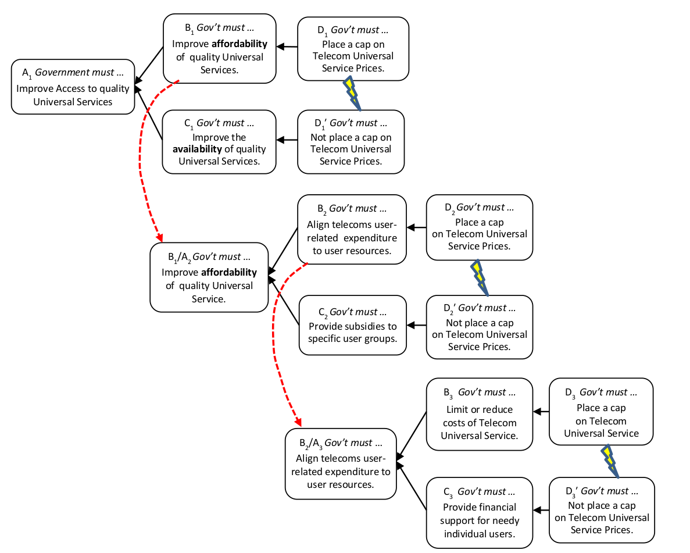

встроенный конфликт (embedded conflict) - ситуация, в которой одно из требований к испаряющемуся облаку может рассматриваться как цель второго облака на более низком уровне системы, с теми же противоположными действиями D и D 'в конфликте на более низком уровне.
Иллюстрация:

Синоним: вложенный конфликт.
#мп
Синоним: embedded conflict